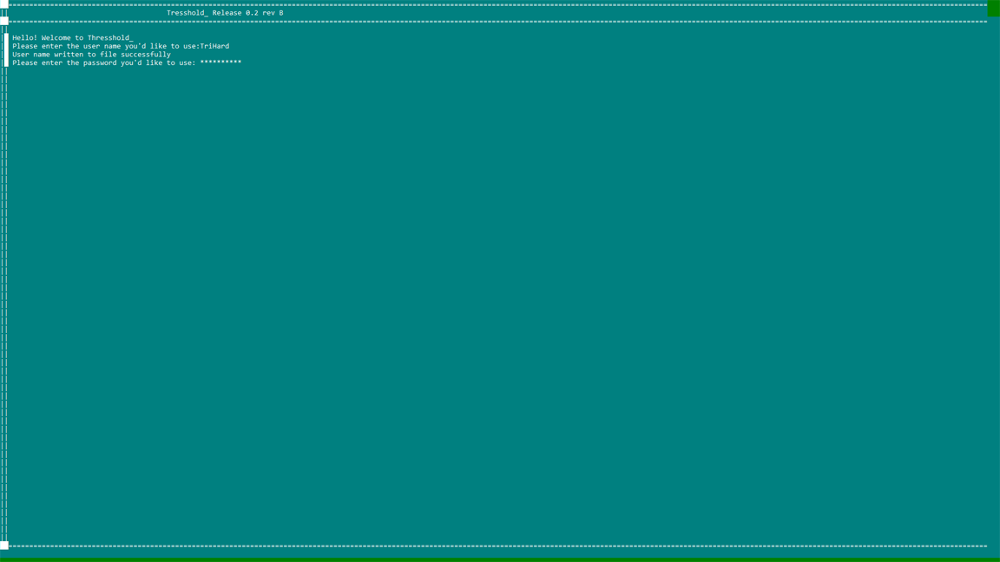

With this program we placed first at the state level and we will be competing at the TSA National Conference in late June! Wish us luck!
With this program we placed first at the state level and we will be competing at the TSA National Conference in late June! Wish us luck!
This project is a team project developed in JavaScript using the 3.js library. This is my first full scale JavaScript project.
Lead Developer: Daniel F.
UI design: Corbin E. and Jordan M.
General Programing: Jordan M.
General Programing: Corbin E.
General Programing: Jesse B.
General Programing: Gregory B. (TriHard Studios)
Logo designer: Sam S.
Executables will be posted soon. We are using electron to package the executables.

You are a space cadet stationed on mars at the SSDD (Solar System Defense Division) to protect the solar system from the aliens that have been trying to come and harvest the Sun’s energy. Suddenly the aliens vanish from your scopes. As this has happened before, the people in mission control decide to draw straws as to who should go out alone to fix the radar. You lose and have to go out. You being, a salty jerk, take the nicest ship that they have to go fix it. Right as you get out of Mars’ gravity field, disaster strikes. The aliens had made a high-tech clocking system that managed to defeat your radar. You evade orbit right as they blow up Mars. They then jump to light speed and head for the Sun. You make a rash decision to follow them. You attack. Because you caught them by surprise, it looks as though you might win. However, their skill and technology are miles ahead of yours. They shoot you with the same beam that destroyed mars and you are sent across the milky way. As you are flying through space with little control over your ship, the console flickers on with a video of your commander. He tells that if you seeing this then the SSDD has fallen and it is up to you to save the solar system. He then tells you that the mission to save the solar system is called Operation Starflight.


Development has been canceled.
Thresshold_ is now at release 0.6.5! This release adds a lot of new features. First and foremost, the ablity to navigate folders, create folders, and delete files and empty directories. Also, the debug console has been greatly impoved with only one command needed to get all the debug info for a module. We are also happy to anouce that we are using a new program structure for debugging.. It is still under development but it should make into release with the next release of Thresshold_. There have been many stablity improvements. There is now activation for Tresshold_ as well. The development key is TOS-LW2016-WDEV.

This is a team project programed in Java. This is the first major project that TriHard Studios has been apart of that is programed in Java.
- Lead Developer: Michael K.
- Logo designer: Sam S.
- GUI design and Implemtation: Gregory B. (TriHard Studios)
- Moral Support and Debugger: Nathan H.
We actually released this software about a month ago... We just weren't able to get to updating this website.. Opps. Anyway, we have released the final build of the TSA encryption utility. This update patched a lot of bugs, gave us working debug messages, and added three new aglorithams! We weren't able to add RSA because we ran out of time and I wasn't able to write a reliable Two-Fish implentation in the time alotted. Oh well. We are have entered this program into the TSA State Conference. Wish us luck! Feel free to download this program in the downloads section.